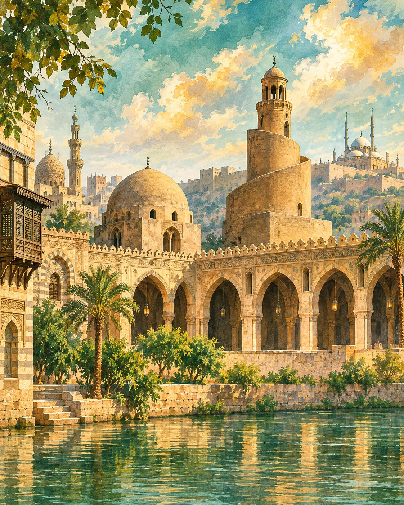

من حصن بابليون إلى درة الشرق الإسـلامي التحول الحضاري، والفتوحات، والعواصم الأربع، ودول الخلافة
دراسة تاريخية وأثرية متخصصة ومفصلة لطلبة الإرشاد السياحي: كيف تحولت مصر من سلة خبز للإمبراطورية البيزنطية وساحة للاضطهاد الديني والمذهبي إلى قلب العالم الإسلامي النابض؟ نشأة الفسطاط، العسكر، القطائع، والقاهرة الفاطمية؛ دراسة منشآت الأيوبيين والمماليك، مدعمة بقاموس مصطلحات المرشد السياحي باللغة الإنجليزية، وتطبيقات عملية على المزارات الميدانية وبنوك أسئلة تفاعلية.

للاستزادة: ملخص المرشد السياحي بالإنجليزية
Islamic Egypt: Why It Matters for International Guiding
When presenting Islamic Egypt to international travelers, you are not merely narrating chronological dynasties; you are unravelling the pivotal bridge between Classical Antiquity and the Medieval Middle East. For centuries, Egypt functioned as the Granary of the Roman and Byzantine Empires, burdened with punitive taxes and torn by deep theological schisms between the native Egyptian Coptic Orthodox Church (Monophysite) and the imperial Byzantine authorities (Melkites).
The arrival of the Arab-Muslim forces led by Amr ibn al-Aas (639–641 AD), culminating in the siege of Babylon Fortress (in today's Coptic Cairo) and the surrender of Alexandria under the Treaty of Alexandria, transformed Egypt's demographic, linguistic, and urban landscape forever. Over consecutive epochs—from the Umayyads, Abbasids, and Tulunids, through the golden artistic age of the Fatimids, the military prowess of the Ayyubids and Mamluks, to the Ottoman administration—Egypt emerged as the undisputed political and cultural capital of Islamic art, monumental architecture, and trade.
أجندة محاضرات مقرر التاريخ والحضارة الإسلامية
تطابق الخطة المعتمدة في كلية السياحة والفنادق جامعة 6 أكتوبر — قسم الإرشاد السياحي
أحوال مصر قبيل الفتح الإسلامي (العصر البيزنطي)
EGYPT UNDER BYZANTINE RULE
مفهوم الحضارة وعناصرها، مسميات الدولة البيزنطية، الأوضاع الاقتصادية وسلة الخبز والضرائب ونظام الحماية، الأوضاع السياسية والعسكرية والدوق، دراسة حصن بابليون، الأوضاع الاجتماعية، والأوضاع الدينية ومجمع خلقدونية وبطش المقوقس.
الفتح العربي لمصر وأهم المظاهر الحضارية
THE ARAB CONQUEST OF EGYPT
أسباب فتح مصر الاستراتيجية والاقتصادية والدينية، مشاورات الجابية، خط سير الحملة (العريش، الفرما، بلبيس، أم دنين، عين شمس، حصار بابليون)، صلح الإسكندرية بشروطه التسعة، ومحاولة مانويل ورد عمرو بن العاص.
عصر الولاة في مصر والدولة الأموية وأهم المظاهر الحضارية
EARLY ISLAMIC GOVERNANCE & THE UMAYYAD ERA IN EGYPT
ولاة الراشدين والأمويين، تأسيس الفسطاط وجامع عمرو (تاج الجوامع)، ملحمة ذات الصواري 655م، نظم الإدارة (الوالي، الشرطة، القضاء، البريد)، تعريب الدواوين، وسقوط الأمويين في أبوصير وتأسيس العسكر.
تاريخ مصر خلال عصر الدولة العباسية
تأسيس العسكر كعاصمة ثانية، مقياس النيل بالروضة (أحمد بن طولون / المتوكل)، ثورات البشموريين، ونظام الولاة.
عصر الدولة الطولونية في مصر
أحمد بن طولون والاستقلال الاقتصادي، تأسيس القطائع كعاصمة ثالثة، جامع ابن طولون وعمارة المئذنة الملوية والبيمارستان.
عصر الدولة الأخشيدية في مصر
محمد بن طغج الإخشيد، أصل لقب الإخشيد، كافور الإخشيدي وإدارة شؤون مصر والشام، والتصدي للهجمات الفاطمية الأولى.
عصر الدولة الفاطمية وتأسيس القاهرة
جوهر الصقلي والمعز لدين الله، تأسيس القاهرة والجامع الأزهر، أسوار وبوابات بدر الجمالي (زويلة، الفتوح، النصر)، وعمارة المساجد الفاطمية.
عصر الدولة الأيوبية وقلعة الجبل
صلاح الدين الأيوبي وإنهاء الفاطميين، بناء قلعة الجبل وبئر يوسف، تخطيط أسوار القاهرة الكبرى، وظهور نظام المدارس السنية.
عصر المماليك البحرية والبرجية
شجرة الدر وقطز والظاهر بيبرس، قلاوون والناصر محمد والسلطان حسن والغوري وقايتباي، أعظم روائع العمارة الإسلامية في العالم وشارع المعز.
عصر الدولة العثمانية وأهم المظاهر الحضارية
معركة الريدانية ومصر إيالة عثمانية، نظام الباشوات والإنكشارية، أسبلة ووكالات خان الخليلي، ومنازل القاهرة والرشيد العثمانية.